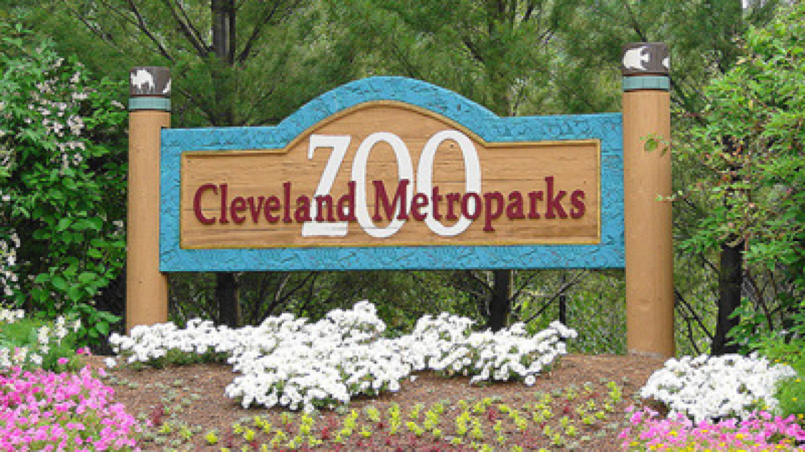

7/2025 - 9/2025, 12/2025 - 1/2026
Processed and resolved tickets sent to the help desk in a timely manner.
Maintained company infrastructure by updating outdated hardware and software.
Assisted with organizing and compiling documentation for completed work.
Deploy updated employee technology between multiple locations via company vehicle.
5/2024 - 9/2024
Assembled, tested and inspected wiring and cable components to ensure compliance with quality standards.
Operated machinery and hand tools to cut, strip, crimp, and terminate wire assemblies to specifications.
Completed daily tasks under tight production schedules, contributing to on-time order fulfillment.
